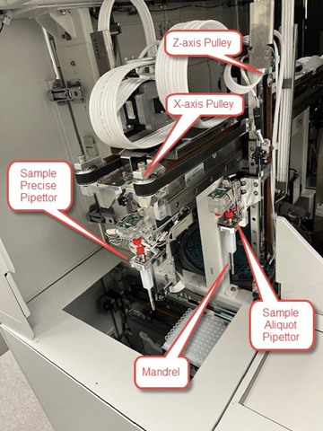
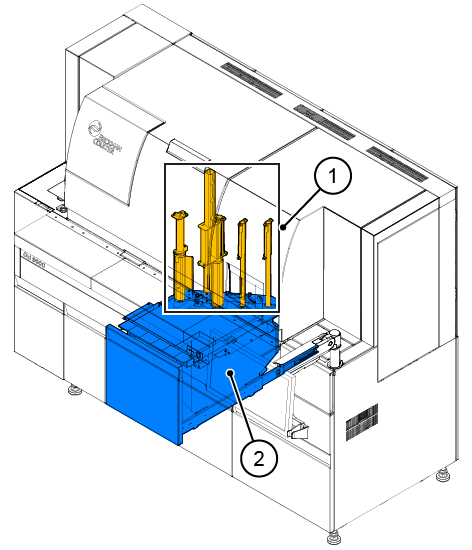

Troubleshooting a Tip Discard Error
This topic includes information about how to troubleshoot a tip discard error related to a sample pipettor.
Safety Reminder
Servicing the DxI 9000 instrument involves potential risks for pinch and puncture, electrical shock, and exposure to hazardous materials. You must mitigate these risks by taking appropriate countermeasures. See Safety for more information.
| Table of Contents |
|---|
| Symptoms |
| Troubleshooting the Error |
Symptoms
During each stage of processing a sample, the system scans a sample pipettor to determine the presence or absence of disposable tips attached to the mandrel.
If a pipettor fails to discard a tip, then in the Console App, when you select the System task indicator to open the System Events page, the list of events might include errors that indicate such a failure. For example, if the aliquot sample pipettor fails to discard a tip, you might find an error with a Description column includes the notification The aliquot sample pipettor did not discard the used disposable tip and with a More Information area includes the notification AliquotSamplePipettor.TipWastePositionSensor.ActualState: False expectedState: True.
- TipCheck_AliquotSamplePipettor.Camera_*
- TipCheck_PrecisionSamplePipettor.Camera_*
See Sample Pipettor Camera Operations and Troubleshooting Process Monitoring Flags for more information.
Troubleshooting the Error
Perform this procedure to troubleshoot a tip discard error related to a sample pipettor.
- Turn off the instrument. See Turning Off the Instrument for more information.
- Open the covers to access the sample pipettor.

1 Aliquot Sample Pipettor 2 Precision Sample Pipettor - Use the X-axis and Z-axis pulleys to move the sample pipettor so that you can inspect it.
Note: The image below calls out the X-axis and Z-axis pulleys for the aliquot sample pipettor.

- Remove the tip, if present, from the sample pipettor mandrel.
- Clean the mandrel.
- Inspect the following areas for obstructions (e.g. stacks of discarded tips or reaction vessels).tip waste chutes, temporary box, waste drawer, and waste bin for obstructions (e.g. stacks of discarded tips or reaction vessels), and be sure the waste bag has been properly installed.
- Tip waste chutes (1, 2, and 3 in the images below)
Note: If a waste chute is dirty, disposable tips and reaction vessels may stick inside the chute, even when the waste drawer is closed.
- Temporary tray
Note: When you open the waste drawer to replace a waste bag while the instrument is processing samples, the disposable tips will not drop into the waste bag and instead will stack inside the temporary tray.
- Waste drawer
- Waste bin
Also, be sure the waste bag has been properly installed.
Note: If a waste bag has not been properly installed (a common issue), disposable tips and reaction vessels may bulk up near the waste chutes and may eventually cause a tip discard failure, a collision event, or a pick-and-place Z-axis out of tolerance error.
1 Waste chutes 2 Waste bin 
1 Aliquot sample pipettor tip chute 2 Precision sample pipettor tip chute 3 Vessel chutes 4 Temporary box 5 Drawer 6 Falling position - Tip waste chutes (1, 2, and 3 in the images below)
- Exercise the temporary tray by opening and closing the waste drawer. Be sure the bin pin (11) strikes the tray plate (15).

8 Waste bin 9 Waste bin sensor 10 Flag, Bin 11 Pin, Bin 12 Tray Sensor 
13 Falling position 14 Temporary tray 15 Plate, tray 16 Spring - Turn on the instrument. See Turning On the Instrument for more information.
- Inspect the process monitoring log files for flags related to the sample pipettor. See Troubleshooting Process Monitoring Flags for more information.
- Calibrate the sample pipettor camera. See
Calibrating the Aliquot Sample Pipettor Camera or
Calibrating the Precision Sample Pipettor Camera for more information.
Note: Verify the camera is turned on, connected, and passes calibration. Other issues may include a faulty backlight or a corrupt Cognex job file.
- For the aliquot sample pipettor, adjust the tip waste position sensor. See Adjusting the Tip Waste Position Sensor for more information.
- For the aliquot sample pipettor, adjust the tip waste chute. See Adjusting the Tip Waste Chute for more information.
- Other possible causes include
- A loose tip discard assembly.
- A collision event.
- The Z-axis motor/encoder out of tolerance.
- Complete the verification of service repair. See Verification of Service Repairs for more information.